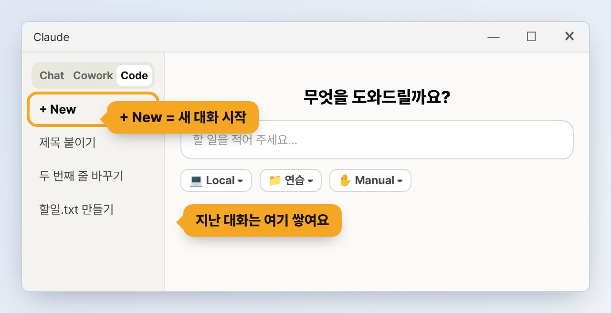
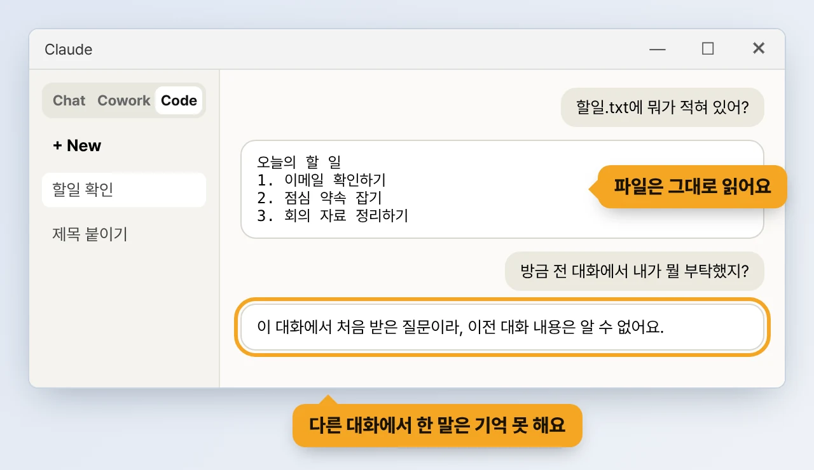
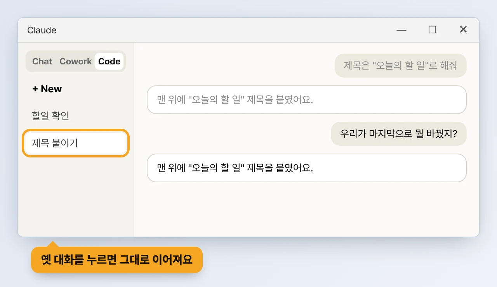
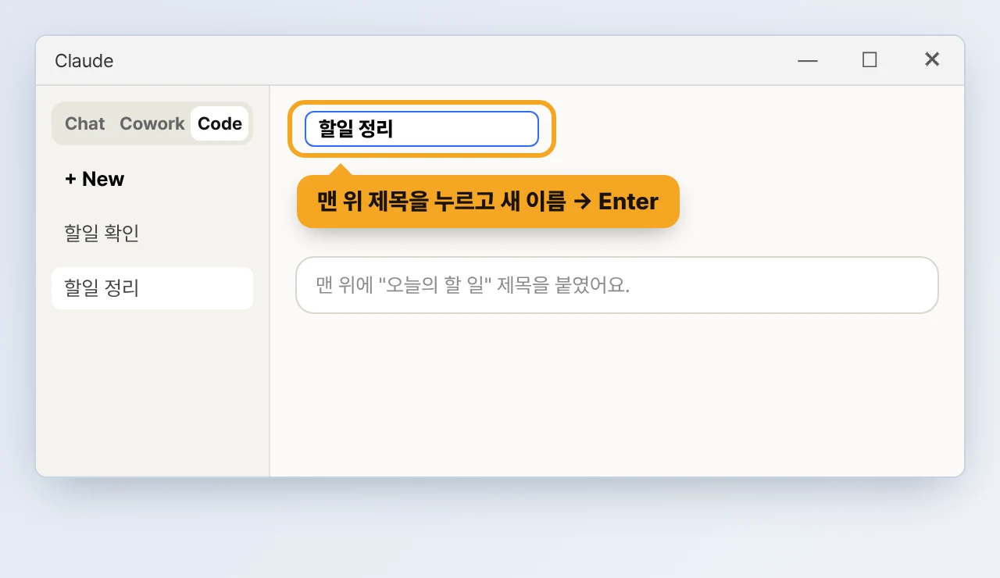
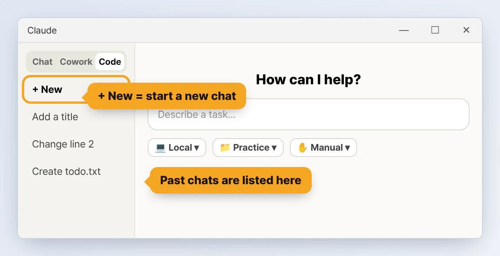
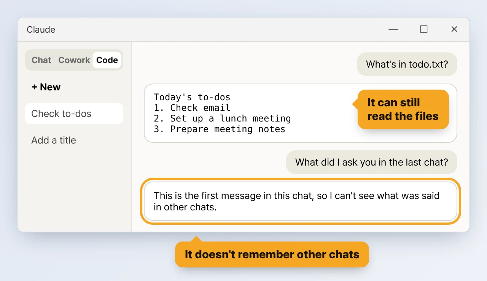
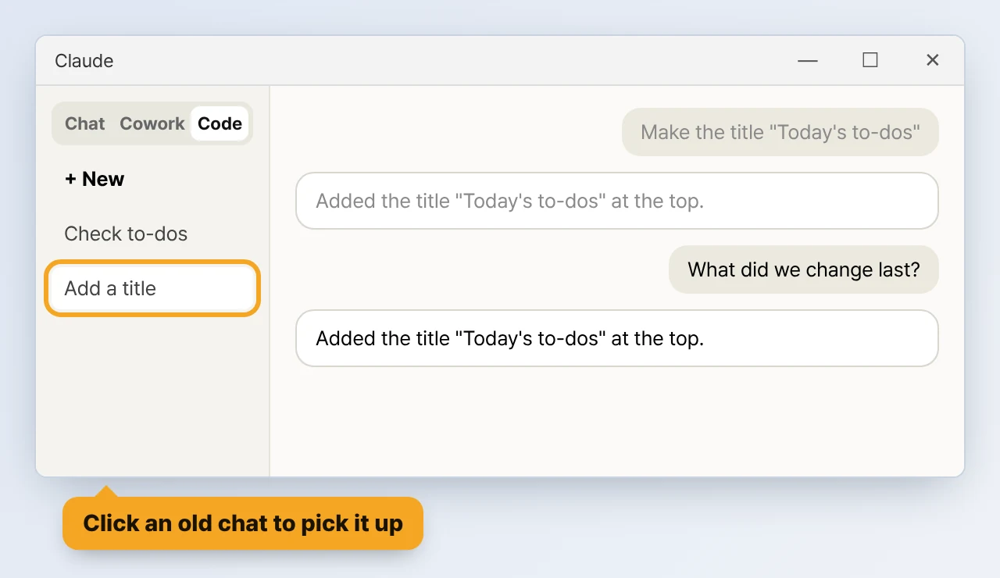
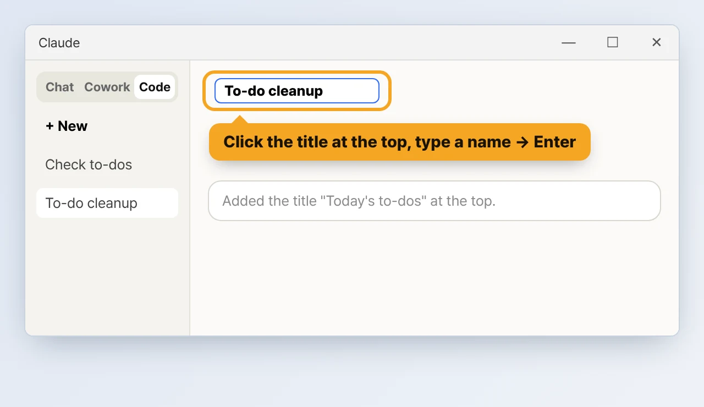

👆 이 내용은 버튼 따라 하는 실습으로도 있어요. 처음이라면 실습으로 직접 해 보고, 이 글은 복습할 때 보세요. 실습 시작하기 →
※ 글 속 그림은 따라 하기 쉽도록 그린 예시입니다. 실제 앱 화면과 모양·글자가 조금 다를 수 있어요.
오늘 새로 배우는 것
Claude와 나눈 대화는 하나씩 따로 저장돼요. 이것을 대화(세션)라고 불러요.
- 새 대화를 시작하면 무엇이 달라지는지
- 지난 대화를 이어서 하는 법
- 대화에 이름을 붙이고 정리하는 법
1. 왼쪽 대화 목록 보기
Claude 앱을 열고 Code 탭을 누르면, 왼쪽 + New 아래에 데스크톱 1·2에서 나눈 대화들이 목록으로 쌓여 있어요. 이름은 Claude가 내용을 보고 자동으로 붙여서, 그림과 달라도 괜찮아요.

2. 새 대화 시작하기
- 왼쪽 위 + New를 누릅니다. 단축키는 Windows Ctrl+N, Mac ⌘+N.
- 입력 칸 아래가 Local · 연습 · Manual인지 확인합니다.
3. 새 대화는 무엇을 기억할까?
먼저 파일을 물어봅니다.
할일.txt에 뭐가 적혀 있어?파일 내용을 잘 보여 줘요. 이번에는 다른 대화에서 한 일을 물어봅니다.
방금 전 대화에서 내가 뭘 부탁했지?
"알 수 없다"는 대답이 나와요. 새 대화는 새 종이와 같아요.
| 새 대화에서는 | |
|---|---|
| 연습 폴더의 파일 | 그대로예요. 언제든 다시 읽을 수 있어요. |
| 다른 대화에서 한 말 | 몰라요. 처음부터 시작해요. |
Claude가 파일을 보고 "할 일 목록을 고치신 것 같아요"처럼 짐작할 수는 있어요. 그래도 다른 대화의 말 자체를 본 것은 아니에요.
4. 지난 대화 이어 하기
- 왼쪽 목록에서 데스크톱 2에서 쓴 대화를 누릅니다.
- 예전에 나눈 말이 그대로 보이면, 이어서 물어봅니다.
우리가 마지막으로 뭘 바꿨지?
이번에는 기억해서 대답해요. 대화 사이를 옮겨 다닐 때는 Ctrl+Tab도 쓸 수 있어요.
5. 대화에 이름 붙이기
- 화면 맨 위에 있는 대화 제목을 누릅니다.
- 할일 정리처럼 알아보기 쉬운 이름을 적고 Enter.

6. 다 쓴 대화 정리하기 — Archive
목록이 길어지면, 대화에 마우스를 올리고 옆에 나오는 메뉴(⋯) → Archive를 누르세요. 보관한 대화는 지워지지 않고, 목록의 View all → Archived에서 다시 볼 수 있어요.
언제 새 대화를 열고, 언제 이어 할까?
| 이럴 때 | 이렇게 |
|---|---|
| 할 일 목록 → 회의 메모처럼 다른 일을 시작 | + New 새 대화 |
| 어제 하던 같은 일을 계속 | 왼쪽 목록에서 그 대화를 눌러 이어 하기 |
| 대화가 너무 길어져 Claude가 엉뚱한 말을 함 | 새 대화를 열고, 필요한 내용만 다시 알려 주기 |
대화가 아주 길어지면 Claude가 앞부분을 스스로 요약해서 이어 가기도 해요.
잘 안 될 때
| 이런 경우 | 이렇게 하세요 |
|---|---|
| 왼쪽 목록이 안 보여요 | Code 탭인지 확인하고, 창을 넓히거나 왼쪽 위 사이드바 버튼을 눌러 보세요. |
| 지난 대화를 열었는데 기억을 못 해요 | 다른 대화를 눌렀을 수 있어요. 예전에 보낸 문장이 보이는 대화인지 확인하세요. |
| 제목을 못 찾겠어요 | 화면 위쪽 가운데나 왼쪽 위, 또는 목록의 메뉴(⋯)를 살펴보세요. 못 바꿔도 괜찮아요. |
오늘 배운 것
- + New는 새 대화. 새 대화는 파일은 읽지만, 다른 대화에서 한 말은 모른다.
- 왼쪽 목록에서 지난 대화를 누르면 그대로 이어진다.
- 다른 일은 새 대화로, 같은 일은 이어서. 이름을 붙이고, 다 쓴 대화는 Archive.
※ The pictures in this guide are illustrations to make it easy to follow. The real app may look a little different or use different words.
What you'll learn today
Each conversation you have with Claude is saved separately. We call it a chat (session).
- What changes when you start a new chat
- How to pick up an old chat
- How to name chats and tidy them up
1. Look at the chat list on the left
Open the Claude app and click the Code tab. Under + New on the left, the chats from Desktop 1 and 2 are listed. Claude names them automatically from what's in them, so they may differ from the picture.

2. Start a new chat
- Click + New at the top left. The shortcut is Ctrl+N on Windows, ⌘+N on a Mac.
- Check that the buttons under the typing box show Local · Practice · Manual.
3. What does a new chat remember?
First, ask about the file.
What's in todo.txt?It shows the file just fine. Now ask about something from a different chat.
What did I ask you in the last chat?
It says it can't tell. A new chat is like a fresh sheet of paper.
| In a new chat | |
|---|---|
| The files in your Practice folder | Stay the same. It can read them again any time. |
| What was said in other chats | Unknown. It starts from scratch. |
Claude may guess from the file, like "It looks like you edited your to-do list." Even so, it hasn't seen what was said in the other chat.
4. Pick up an old chat
- In the list on the left, click the chat you used in Desktop 2.
- When you see the earlier messages, ask a follow-up.
What did we change last?
This time it remembers. You can also move between chats with Ctrl+Tab.
5. Name the chat
- Click the chat title at the top of the screen.
- Type a name you'll recognize, like To-do cleanup, and press Enter.

6. Tidy up finished chats — Archive
When the list gets long, hover over a chat, open the menu (⋯) next to it, and choose Archive. Archived chats aren't deleted; you can find them under View all → Archived.
When to start a new chat, and when to continue?
| When | Do this |
|---|---|
| You start a different job, like to-do list → meeting notes | + New chat |
| You carry on the same job from yesterday | Click that chat in the list to continue |
| The chat got so long that Claude goes off track | Start a new chat and tell it only what it needs |
When a chat gets very long, Claude also summarizes the earlier part on its own to keep going.
If something goes wrong
| If this happens | Do this |
|---|---|
| I can't see the list on the left | Check you're on the Code tab, then widen the window or click the sidebar button at the top left. |
| I opened an old chat but it doesn't remember | You may have clicked a different chat. Check it shows messages you sent before. |
| I can't find the title | Look at the top center or top left, or the chat's menu (⋯) in the list. It's fine if you can't rename it. |
What you learned today
- + New starts a new chat. A new chat reads your files but doesn't know what was said in other chats.
- Click a past chat in the list to pick it up where you left off.
- New job, new chat; same job, continue. Name your chats and Archive the finished ones.